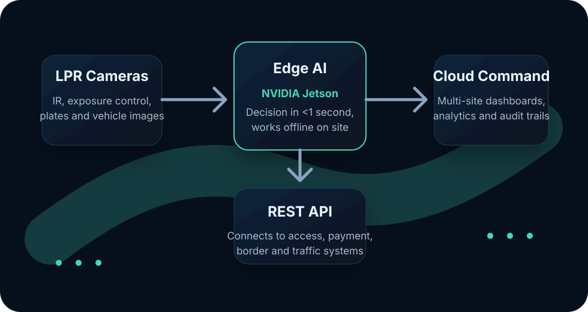

AI vehicle recognition for critical infrastructure
GateVio turns license plates into reliable operational decisions.
Enterprise ALPR and traffic intelligence for agencies and operators that need fast, auditable vehicle access, parking, border, highway and city-zone control. Built on proven Machine Can See and GateVio technology.
99%+recognition accuracy in real operating conditions
<1sfrom detection to access or alert decision
24/7night, rain, snow, sun and poor lighting
Offlinelocal operation with automatic sync
Built for public-sector and infrastructure-grade operationsGovernmentsCustoms and border agenciesHighway operatorsCitiesParking and event operators
Four solution lines
One recognition platform, configured for the vehicle flows that matter.
GateVio combines on-site AI decisions with central command software, so each deployment can start as a pilot and scale across locations, lanes, parking zones or protected city areas.
01
Border & Customs
Centralized ALPR for entry and exit points, designed for fast vehicle lookup and cross-location movement history.
Plate, image, video, time and GPS record for every crossing
Search by plate, partial plate, period or vehicle image
REST API integration with existing agency systems
02
Events & Parking
Ticketless vehicle access and parking revenue control for large events, venues and distributed parking sites.
Pre-registered, paid, VIP, logistics, staff and press access zones
Live occupancy and revenue overview across locations
Supports payment and mobile-first parking flows
03
Highways & Traffic Management
Traffic monitoring for highways and critical road sections, with automatic alerts for safety and flow incidents.
Vehicle counts by lane and direction
Speed, throughput and congestion analytics
Wrong-way, stopped-vehicle and queue detection
04
Urban Access Control
Camera-based vehicle access control for residential, pedestrian and protected city zones without physical barriers.
Resident and authorized vehicle lists
Unauthorized entry evidence with time and image record
Central view across all protected zones
Edge plus cloud architecture
Sub-second decisions on site. Central control across the network.
GateVio uses NVIDIA Jetson edge processing for local recognition and decision-making, while cloud services provide dashboards, analytics, synchronization and multi-site administration.

NVIDIA Jetson edge AI
Image processing runs directly at the control point on NVIDIA Jetson AGX Orin or Jetson Orin NX hardware, reducing latency and dependency on connectivity.
Offline operation
Sites continue to operate locally during internet interruptions, then synchronize records automatically when connectivity returns.
REST API integrations
Connect GateVio with border databases, city systems, parking platforms, payment providers, access control systems and operational dashboards.
Operational evidence
Designed for difficult real-world vehicle environments.
The underlying Machine Can See platform is used in operational environments across Serbia, the United Kingdom and the United States, including industrial, logistics, warehouse and residential-community use cases.
99%+recognition accuracy in real operating conditions, including poor light and weather.<1sprocessing from vehicle detection to access decision, audit record or incident alert.24/7continuous operation for checkpoints, gates, parking sites and traffic monitoring points.Scalefrom one pilot location to multi-site and national deployments.
Deployment model
Start with a measurable pilot. Scale when the results are visible.
GateVio is built for procurement teams and operators who need technical confidence before rollout. A pilot can validate recognition accuracy, operational workflow and integration needs on a real site.
Pilot site
Install cameras and edge AI at one location, configure recognition rules and measure performance against real vehicle traffic.
Integration
Connect GateVio to existing databases, access policies, payment systems or operational software through REST APIs.
Network rollout
Extend to lanes, zones, parking sites or traffic sections with centralized monitoring, reporting and support.
Request information
Tell us what vehicle flow you need to control.
Use the form to request a demo, technical discussion or project assessment. GateVio can review the use case, expected vehicle volume, number of sites, integration needs and pilot options.
Best fit: public agencies, infrastructure operators, cities, parking operators, customs and border authorities, large events.
Technology: GateVio uses Machine Can See and GateVio vehicle recognition technology where appropriate for the project.